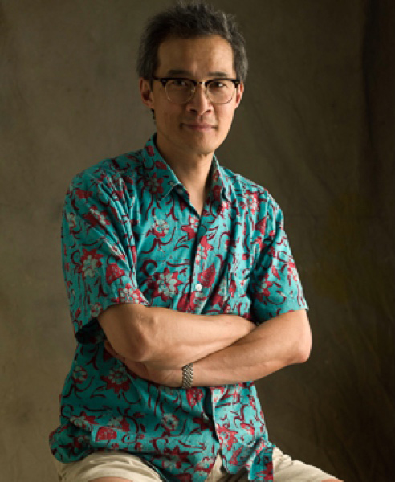

George Ong was born in Hong Kong and educated in England. After attending art school in Norwich, he worked as full-time assistant to David Montgomery for five years. In the late 1980s a shoot for Elle gave him the break he needed and he has been working in editorial photography ever since. Working most days from his canal-side studio in London, George is a table-top still life photographer who has contributed to the FT’s How to Spend It magazine for more than a decade. Other clients include Boots, Cutler & Gross, Red Magazine, The Daily Mail, Marks & Spencer, Waitrose, Tiffany & Co and Givenchy. Early in his career George learnt that a photograph should talk to its viewer, a lesson that he continues to apply to his work today.
George
Ong
Photo
